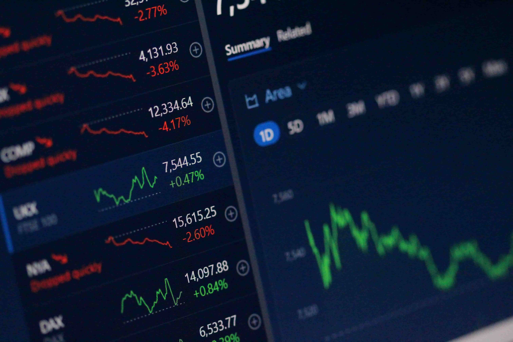

Artículo: Cómo elegir un broker de Forex
¿Cómo Elegir un Broker de Forex Confiable y Seguro?
La elección de un buen broker es una de las decisiones más importantes para tu éxito en el trading. Aquí te guiamos paso a paso.
¿Qué es un Broker de Forex?
Un broker de Forex es la plataforma o el intermediario que te permite acceder al mercado de divisas. Es el puente entre vos y las operaciones de compra y venta de pares de divisas. Sin un broker, no podés ejecutar tus trades. Por eso, elegir uno confiable, seguro y adecuado a tus necesidades es un paso fundamental para proteger tu capital y optimizar tu experiencia de trading.
“Un buen broker no solo te abre las puertas al mercado, sino que te protege de sus riesgos.”
Factores Clave al Elegir un Broker
Considerar los siguientes puntos te ayudará a tomar una decisión informada:
- 1. Regulación y Seguridad: Este es, sin duda, el factor más crítico. Un broker debe estar regulado por entidades financieras de renombre. Busca licencias de organismos como:
- FCA (Financial Conduct Authority - Reino Unido)
- CySEC (Cyprus Securities and Exchange Commission - Chipre, UE)
- ASIC (Australian Securities and Investments Commission - Australia)
- NFA/CFTC (National Futures Association / Commodity Futures Trading Commission - EE. UU.)
- BaFin (Autoridad Federal de Supervisión Financiera - Alemania)
- 2. Spreads, Comisiones y Costos: Los costos operativos impactan directamente tu rentabilidad.
- Spreads: La diferencia entre el precio de compra y venta de un par de divisas. Preferí brokers con spreads bajos y competitivos.
- Comisiones: Algunos brokers cobran una comisión fija por lote operado, además del spread. Asegurate de entender la estructura de costos.
- Swaps/Roll-over: Intereses que se cobran o pagan por mantener posiciones abiertas de un día para otro.
- Comisiones por Depósito/Retiro: Verificá que no haya costos ocultos al ingresar o retirar fondos.
- 3. Tipos de Cuenta Ofrecidos: Un buen broker ofrecerá variedad para adaptarse a diferentes niveles de capital y experiencia.
- Cuenta Estándar: Para lotes completos (1.0 lotes estándar = 100,000 unidades de divisa base).
- Cuenta Micro: Permite operar con lotes de 0.01 (1,000 unidades de divisa base). Ideal para principiantes que quieren empezar con poco capital.
- Cuenta Cent: Opera con céntimos de dólar. Excelente para practicar con dinero real minimizando el riesgo.
- Cuenta ECN/STP: Ofrecen spreads más ajustados y acceso directo al mercado, pero pueden tener comisiones por operación.
- Cuenta Demo: Imprescindible. Te permite practicar con dinero virtual y familiarizarte con la plataforma sin riesgo real.
- 4. Plataformas de Trading y Herramientas:
- MetaTrader 4 (MT4) y MetaTrader 5 (MT5): Son las plataformas más populares y robustas, con excelentes herramientas de gráficos, indicadores y capacidad para Expert Advisors (EAs).
- Plataformas Propias: Algunos brokers tienen sus propias plataformas web o móviles. Asegurate de que sean intuitivas, rápidas y estables.
- Herramientas Adicionales: Calendario económico, noticias en tiempo real, análisis de mercado, VPS (Virtual Private Server), señales de trading.
- 5. Calidad del Soporte al Cliente: Un buen soporte es vital.
- Disponibilidad: ¿Están disponibles 24/5 (o 24/7)?
- Idiomas:¿Ofrecen soporte en tu idioma?
- Canales de Contacto: Chat en vivo, teléfono, email. Probá su tiempo de respuesta antes de abrir una cuenta real.
- 6. Métodos de Depósito y Retiro:
- Variedad: Tarjetas de crédito/débito, transferencias bancarias, PayPal, Skrill, Neteller, criptomonedas.
- Velocidad: ¿Cuánto tiempo tardan los depósitos en reflejarse y los retiros en procesarse?
- Comisiones: ¿Hay costos asociados a los depósitos o retiros?
- 7. Apalancamiento Ofrecido: Si bien el apalancamiento alto es atractivo, también amplifica el riesgo. Elegí un broker que ofrezca un apalancamiento que se ajuste a tu gestión de riesgo. Recordá que, con regulaciones estrictas (como en Europa o EE. UU.), el apalancamiento está limitado.
Consejo Final: Prueba antes de Invertir
Nuestra recomendación más importante es siempre probar la cuenta demo del broker antes de comprometer dinero real. Una cuenta demo te permitirá evaluar la plataforma, la velocidad de ejecución, los spreads en tiempo real y la calidad del soporte sin ningún riesgo.
Dedica tiempo a investigar y comparar. La elección de un broker es una inversión en tu seguridad y en tu futuro como trader.
¿Listo para Gestionar tu Riesgo?
Una vez elegido tu broker, el siguiente paso crucial es aprender a gestionar tu capital y riesgo. ¡Es la clave para la supervivencia a largo plazo en el trading!
Explorar Cuentas y Gestión de Riesgo